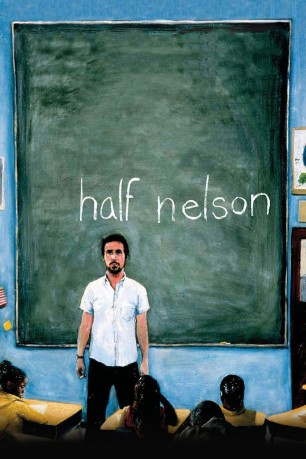

#5965 Half Nelson
Auszeichnungen: für 1 Oscars nominiert
 
 IMDB-Wertung: 7.2 / 10
IMDB-Wertung: 7.2 / 10  Tomatometer: 90
Tomatometer: 90  Metascore: 0
Metascore: 0 
Tagsüber unterrichtet Dan Dunne an einer innerstädtischen Highschool, abends kokst er und lebt ein Leben in Einsamkeit. Als ihn seine Schülerin Drey high erwischt, entwickelt sich eine Freundschaft zwischen der erwachsen wirkenden 13-Jährigen und dem manchmal kindlich erscheinenden Lehrer. Schnell erfährt Dunne, dass Dreys Bruder Frank sein Drogendealer war. Die Kontakte ihm kann Dunne nicht unterbinden, aber sie führen zu einem Vorfall, der vielleicht beiden die Augen öffnet.
Jahr: 2006
Dauer: 106 Minuten
FSK: 12
Land: USA Studio: THINKFilmTonspuren: DD5.1 - ,
Untertitel:
Auflösung: 720p (1280x718) Größe: 3624 MB
Genre: Drama
Regisseur: Ryan Fleck
Drehbuch: Linn-Jeanethe Kyed
Soundtrack:
Darsteller:
 Ryan Gosling als Dan Dunne
Ryan Gosling als Dan Dunne- Jeff Lima als Roodly
- Shareeka Epps als Drey
- Nathan Corbett als Terrance
- Tristan Mack Wilds als Jamal
- Stephanie Bast als Vanessa
- Eleanor Hutchins als Simone
 Sebastian Sozzi als Javier
Sebastian Sozzi als Javier- Tina Holmes als Rachel
 Starla Benford als Principal Henderson
Starla Benford als Principal Henderson Anthony Mackie als Frank
Anthony Mackie als Frank Denis O'Hare als Jimbo
Denis O'Hare als Jimbo Monique Gabriela Curnen als Isabel
Monique Gabriela Curnen als Isabel Deidre Goodwin als Tina
Deidre Goodwin als Tina- Collins Pennie als Mike
 Raymond Anthony Thomas als Earle
Raymond Anthony Thomas als Earle Ron Cephas Jones als Mr. Dickson
Ron Cephas Jones als Mr. Dickson Sharon Washington als Suzanne
Sharon Washington als Suzanne Deborah Rush als Jo Dunne
Deborah Rush als Jo Dunne Jay O. Sanders als Russ Dunne
Jay O. Sanders als Russ Dunne- Nicole Vicius als Cindy
 Adepero Oduye als Crack Smoker
Adepero Oduye als Crack Smoker- Katie Nehra als Woman with Camera
- Tyra Kwao-Vovo als Stacy
- Rosemary Ledee als Gina
- Bryce Silver als Bernard
- Kaela C. Pabon als Lena
- Erica Rivera als Erika
- Karen Chilton als Karen
- Kitty als Dave - The Cat
- Thaddeus Daniels als Referee
- Susan Kerner als Motel Slow Dancer
- Stanton Davis als Trumpet Player
- Christopher Williamson als Charles
- Leslie Eva Glaser als Rose
- David Easton als Jeff Dunne
- Steve Kursh als Man on Bed
- Matt Kerr als Mr. Light
Datei: X:\2006(G-M)\Half Nelson (2006, FSK12, 1280x718).mkv seit 14.04.2017
Festplatte: HD 2005(G-Z)-2006(A-Z)
 Es gibt insgesamt 48 Filme in der Gruppe '2006(G-M)'
Es gibt insgesamt 48 Filme in der Gruppe '2006(G-M)'